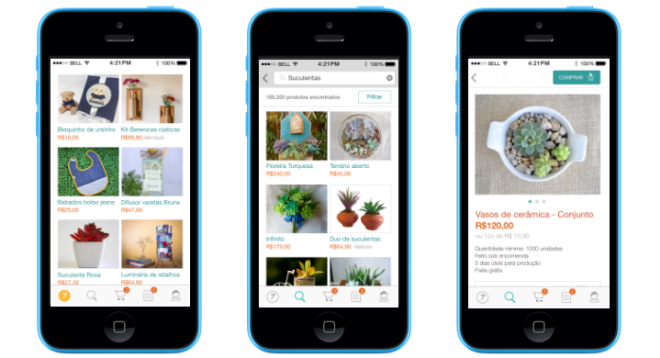
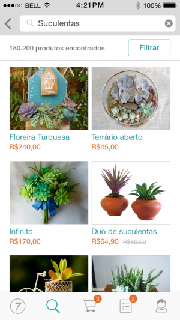

iOS - Vamos falar um pouco de arquitetura
Publicado em:
@aterribili

Fala galera, tudo tranquilo? Me chamo Abner Terribili, sou novo no time de Engenharia aqui na Elo7, e atualmente estou no time de mobile. Espero ter boas participações aqui no blog. 🙂
Nós, aqui na Elo7, acabamos de tirar do forno nossa primeira versão do aplicativo para iOS (iPhones) para compradores.
E hoje, vou abrir para vocês um pouco da arquitetura que decidimos adotar, claro, elencando alguns dos motivos para determinadas decisões.
Aplicativo iOS elo7
Arquitetura
Já tínhamos a versão web mobile do elo7, durante o desenvolvimento do aplicativo iOS, levantamos algumas perguntas que nos levaram a decidir adotar uma arquitetura híbrida.
Mas o que é uma aplicação híbrida?
Uma aplicação híbrida nada mais é do que mesclar um pouco de web (WebView) com features nativas.
Pô, mas isso fica bom?
Claro, nosso time de front-end fez um ótimo trabalho quanto a versão web mobile, sendo assim, você pode passar despercebido por uma WebView.
**Por que adotaram uma arquitetura híbrida?
** Notamos que a experiência dos nossos usuários foi muito melhor com o lançamento da versão web mobile em relação a versão desktop (Tanto que as vendas dobraram!). Queríamos refinar essa experiência, então decidimos utilizar uma versão híbrida. Onde em um curto espaço de tempo teríamos uma aplicação com recursos nativos.
Quanto tempo é necessário para confecção de um app como o nosso?
Mais ou menos em 2 meses (levando em conta que toda estrutura, fase de concepção e webviews já estavam prontas), para entregar a primeira versão, de acordo com as necessidades iniciais do marketplace, mas esse é um trabalho cíclico, sempre estamos entregando diversas melhorias, com o acompanhamento de métricas e reports de usuários. Ou seja nunca temos uma versão final.
**Como vocês definem o que será WebView e o que será nativo?
** É fato que existem diferenças na experiência do usuário entre plataformas (iOS, Android, Web, etc.). Para construção dos recursos nativos utilizamos os seguintes critérios:
- Interações que são muito específicas da plataforma. Exemplo: o sistema de navegação do iOS
- Telas mais utilizadas pelo usuário final
- Recursos de nossa aplicação que não sofrem constantes mudanças

Tela de busca aplicativo elo7 iOS
**Por que evitar modificar constantemente a navegação?
** Quando determinado usuário abre um aplicativo, ele aprende a usá-lo, de acordo com a UX (User Experience) que definimos e que a Apple indica. Se por acaso, ocorrer modificações frequentes, esse aprendizado pode até mesmo incomodar o usuário.
E a parte de busca?
Segue a mesma ideia da navegação, com um adendo de que adaptamos o sistema de busca do nosso Marketplace para o aplicativo.
Legal, mas qual a necessidade dessa adaptação do sistema de busca?
Assim como explicado acima, a respeito de UX, muitos de nossos usuários já utilizam a versão Web. Com isso, nos esforçamos muito para manter a experiência do sistema de busca do aplicativo, fiel a versão Web. Com isso estamos recebendo bons feedbacks dos usuários. 🙂
Linguagem, Ambiente e Arquitetura Base
Objective-C ou Swift?
Essa pergunta ainda é bem polêmica, mas acabamos optando de início por Objective-C com uma futura migração para Swift.
Qual o principal motivo para a escolha do Objective-C?
Temos um time especializado em Objective-C, a primeira versão por uma questão de tempo e investimento decidimos iniciar o projeto em Objective-C e aos poucos vamos migrando algumas telas e novas funcionalidades para Swift.
Qual IDE estão utilizando para desenvolver esse aplicativo?
Xcode, ele atende bem e faz pouco mais do que promete. Temos um bom instrumental para desenvolvimento e para testes. (Tem até plugin do Vim :P)
E o quanto ao desenvolvimento do layout, o Xcode também auxilia?
Auxilia, com eles fazemos bom proveito do Autolayout que nos ajuda a manter a mesma UI (User Interface) para dispositivos com diferentes tamanhos de tela. (4s, 5s, 6, 6+)
Qual organização vocês adotaram para as camadas de visualização?
De início, fizemos todas as views em um arquivo Storyboard só. Depois, conforme o aplicativo crescia, ficou um pouco complicado encontrar cada uma delas e começamos a sofrer um pouco com Merge Hell, assim concluímos que era melhor dividir em mais de um arquivo e hoje estamos muito felizes com essa nossa decisão.
Por falar em camada de visualização, vocês estão usando alguma coisa parecida com MVC?
Sim. Estamos usando MVC. O iOS faz proveito desse modelo de arquitetura de software.
Mas esse MVC, contém regra de negócios?
Não. Apenas regras de visualização. Imagine o backend (servidor), o que seria a camada de visualização (view) dele? Os results (JSON, XML, etc.), portanto a nossa aplicação trata esses results para serem apresentados, no que nós consideramos como camada de visualização. Concluindo, inverso ao servidor, nosso Model é o result backend.
Por que manter no app apenas regras de visualização?
Porque assim podemos usar a mesma API para diferentes clientes. (Android, iOS, etc.)
Qual o app target da versão iOS?
Quando iniciamos o desenvolvimento a maioria dos usuários já possuíam a versão 8, mas notamos que muitos ainda estavam na versão 7.1 e acabamos optando pela mesma, que entrega features muito bacanas e que agregam muito para nosso aplicativo.
Dependencias
Qual gerenciador de dependências vocês usaram?
Uma gem chamada CocoaPods, tem nos atendido bem e o setup é simples. Como qualquer outro dependency manager decente, basta um ou dois comandos (setup e install), e está tudo lá para ser usado. Mais aqui: CocoaPods
Libs
Usaram alguma lib?
Sim. E todas com suporte ao CocoaPods. Yeah!
Quais são?
- AFNetworking: Uma forma simples de fazer requisições Get e Post de Web Services.
- BSKeyboardControls: Um facilitador para manter o layout bacana em momentos de uso do teclado do iPhone.
- SDWebImage: Biblioteca que adiciona alguns extension methods para as imagens vindas da Web. (Cacheamento de imagens, Performance, thread safe, download de imagem assíncrono)
- SVProgressHUD: Sabe aquela barrinha de progresso? Não se preocupe nunca mais em ter que implementa-la na mão, caso esteja em um projeto iOS.
Testes Automatizados
E quanto a testes de unidade/funcionais, o que vocês usam?
Optamos pelo framework nativo, XCTTest, que é mantido pela própria Apple e assim podemos ter certeza que não será abandonado tão cedo, que vem acontecendo com frequência com os frameworks de teste. 🙁
E testes de aceitação?
Essa decisão exigiu algum tempo e pesquisa e por fim adotamos o KIF Framework, durante a implementação encontramos as seguintes vantagens e desvantagens:
Desvantagens
- As formas de acesso aos eventos dos elementos são feitas, de forma mais simples, por label de acessibilidade. (Não é tão simples atribuir essa label para todos elementos visíveis e não visíveis)
Vantagens
- Testes escritos em Objective-C ou Swift.
- Setup simples.
- Gerencia ciclo de vida do driver do iOS.
Controle de versão
E o controle de versão e repositório remoto?
Git e Github <3.
Por hoje é isso pessoal, qualquer dúvida ou sugestão comente abaixo. 🙂
Abner (Com participação especial da @andressaalbuquerque)